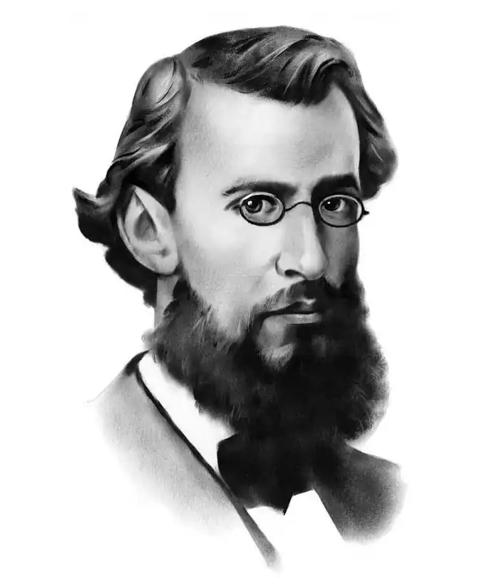

Панас Мирний
(1849 — 1920)
Панас Мирний (Панас Якович Рудченко) народився 13 травня 1849 року в родині бухгалтера повітового казначейства в місті Миргороді на Полтавщині. Незначною була освіта Панаса Рудченка, бо після кількох років навчання в Миргородському парафіяльному, а потім у Гадяцькому повітовому училищі чотирнадцятилітній хлопець йде на власний хліб. Чиновницька служба Рудченка почалася в 1863 році в Гадяцькому повітовому суді. Наступного року він переходить у повітове казначейство помічником бухгалтера, а згодом, після короткочасного перебування в Прилуках, займає цю ж посаду в Миргородському казначействі. Так минули перші вісім років служби в невеликих містах Полтавщини. На цей час припадають його перші спроби на ниві літературної творчості та фольклористичної діяльності. Частина зібраних П. Рудченком фольклорних матеріалів була згодом опублікована його братом Іваном Біликом у збірниках "Народные южнорусские сказки" (1869, 1870) та "Чумацкие народные песни" (1874). З 1871 року Панас Рудченко живе і працює в Полтаві, займаючи різні посади в місцевій казенній палаті. Його зовсім не приваблювала чиновницька кар'єра (хоч сумлінне, ретельне виконання службових обов'язків і дозволило досягти високого чину дійсного статського радника). І. П. Рудченко починає пробувати свої сили в літературі. Прикладом для нього був старший брат Іван, що вже з початку 60-х років публікував свої фольклорні матеріали в "Полтавских губернских ведомостях", друкувався в "Основі", а пізніше видав окремі збірники казок і пісень, перекладав оповідання Тургенєва, виступав у львівському журналі "Правда" з критичними статтями. Літературна праця стає справжньою втіхою і відрадою П. Рудченка. Уриваючи час від відпочинку, просиджуючи вечори за письмовим столом, він з натхненням віддається улюбленим заняттям. Перші його твори (вірш "Україні" та оповідання "Лихий попутав"), підписані прибраним ім'ям Панас Мирний, з'явилися за кордоном, у львівському журналі "Правда" в 1872 році. Незважаючи на те, що в 70 — 80-х роках письменник продовжує інтенсивно працювати, його твори, в зв'язку з цензурними переслідуваннями українського слова в Російській імперії, друкуються переважно за кордоном і на Наддніпрянській Україні були майже невідомі широким колам читачів. Так, 1874 року в журналі "Правда" побачили світ нарис "Подоріжжя од Полтави до Гадячого" та оповідання "П'яниця", а в 1877 році в Женеві з'являється повість "Лихі люди". Ще 1875 року в співавторстві з братом Іваном Біликом було закінчено роботу над романом "Хіба ревуть воли, як ясла повні?" і подано до цензури, але в зв'язку з так званим Емським указом 1876 року в Росії цей твір не був опублікований і теж вперше з'являється в Женеві у 1880 році. Тільки в середині 80-х років твори Панаса Мирного починають друкуватися на Наддніпрянщині: на сторінках альманаху "Рада", виданого М. Старицьким у 1883 — 1884 pp., публікуються перші дві частини роману "Повія" та два оповідання з циклу "Як ведеться, так і живеться". 1886 року в Києві виходять збірник творів письменника "Збираниця з рідного поля" та комедія "Перемудрив". Одночасно Мирний продовжує виступати і в західноукраїнських збірниках та журналах, де друкуються такі його твори, як "Лови", "Казка про Правду та Кривду", "Лимерівна", переспів "Дума про військо Ігореве". Літературні інтереси Панаса Мирного тісно поєднувалися з його громадською діяльністю. Ще за молодих років він був зв'язаний з революційним визвольним рухом, з 1875 року брав участь у нелегальній роботі революційного гуртка "Унія", який був утворений у Полтаві; під час обшуку в нього були знайдені заборонені політичні видання. Підтримував Мирний тісні зв'язки з багатьма діячами української культури — Лисенком, Старицьким, Карпенком-Карим, Кропивницьким, Коцюбинським, Лесею Українкою, Заньковецькою, Білиловським, Жарком. Як член комісії міської думи він бере активну участь у спорудженні пам'ятника І. Котляревському в Полтаві. Особливо посилюється громадська діяльність Панаса Мирного напередодні і в період першої російської революції. Він виступає з відозвами, в яких закликає до єднання всіх прогресивних сил у боротьбі за свободу й рівноправність жінок, співробітничає в журналі "Рідний край", що 1905 року почав видаватися в Полтаві, у ряді своїх творів ("До сучасної музи", "Сон", "До братів-засланців") відгукується на революційні події. Коли 1914 року було заборонено вшанування пам'яті Шевченка, письменник у відозві, написаній з цього приводу, висловлює глибокий протест і обурення ганебними діями царизму. Не дивно, що в 1915р. поліція розшукує "політично підозрілу особу" Панаса Мирного. В зв'язку з тим, що письменник, не бажаючи ускладнювати свої службові стосунки, весь час конспірувався, його особа для широких кіл читачів та, як бачимо, і для офіційних властей була таємницею. Та справа ще й в тому, що Панас Мирний, як людина виключної скромності, вважав, що треба дбати не за популярність своєї особи, а за працю на користь народові. Вже незадовго до смерті в листі до знайомого І. Зубковського він просить не розкривати його псевдоніма: "Хотя многие мои знакомые знают, кто такой Панас Мирный, но я за жизни своей не хотел бы рекламировать своей фамилии, серьезно считая себя недостойным тех прославлений, какие создались вокруг имени Мирного" Після встановлення Радянської влади на Україні Мирний, незважаючи на свій похилий вік, іде працювати в Полтавський губфінвідділ. Помер Панас Мирний 28 січня 1920 року. Поховано його в Полтаві. Згідно з постановою уряду Української РСР в будинку, де жив письменник з 1903 року, утворено літературно-меморіальний музей. У 1951 році в Полтаві урочисто відкрито пам'ятник письменникові.